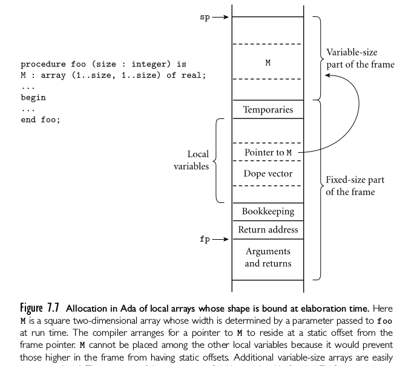
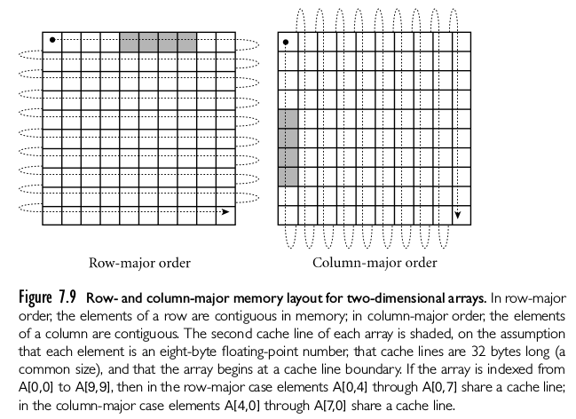
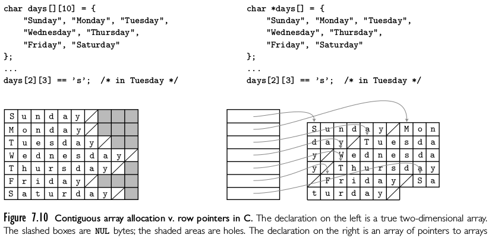
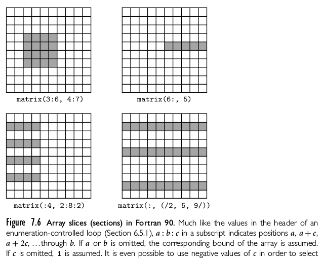
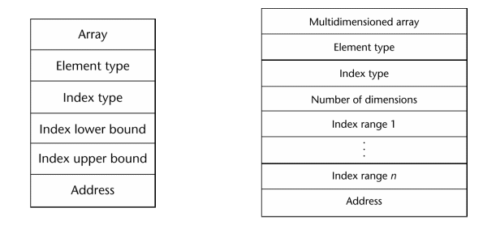
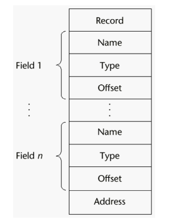
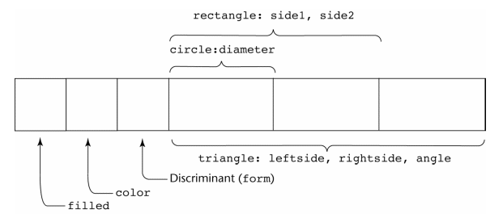
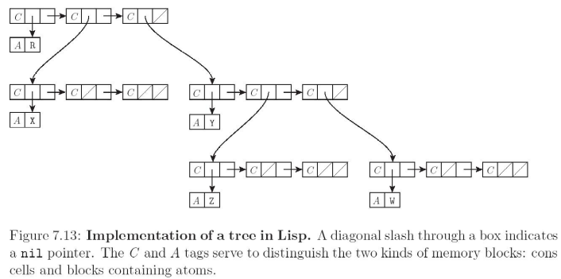

Created: 2024-08-23 vie 18:59
TYPE stack_element = INTEGER; (* or whatever type the user prefers *)
MODULE stack;
IMPORT stack_element;
EXPORT push, pop;
...
PROCEDURE push(elem : stack_element);
...
PROCEDURE pop() : stack_element;
...
TYPE celsius_temp = REAL;
fahrenheit_temp = REAL;
VAR c : celsius_temp;
f : fahrenheit_temp;
BEGIN (* alias_types *)
c := 100.0;
f := c; (* this should probably be an error *)
var a : integer; b, c : real;
...
c := a + b;
float en expresiones se vuelven doubleshort int y char se vuelven int en las expresionesarray_name(index_value_list) \(\to\) an elementstatic son Estáticosstatic son (stack)dinámicos FijosArrayList )
array [a..b,c..d] sea igual a array [a..b] of array [c..d]

int list [] = {4, 5, 7, 83}char name [] = "freddie";char *names [] = {"bob", "jake", "Joe"};String[] names = {"Bob", "Jake", "Joe"};A : array [L1..U1] of array [L2::U2] of array [L3..U3] of elem;
elem\( A(i,j,k) = \mbox{ address of A } + (i * S1) + (j * S2) + (k * S3) - \)
\( [(L1 * S1) + (L2 * S2) + (L3 * S3)] \)


%; literales son delimitados con
paréntesis
%hi_temps = ("Mon" => 77, "Tue" => 79, "Wed" => 65, … ),%hi_temps{"wed"} = 83;delete
delete %hi_temps{"Tue"}01 EMPLOYEE-RECORD.
02 EMPLOYEE-NAME.
05 FIRST PICTURE IS x(20).
05 MIDDLE PICTURE IS x(10).
05 LAST PICTURE IS x(20).
02 HOURLY-RATE PICTURE IS 99v99.
type Employee_Name_Type is record
First : String (1..20);
Middle : String (1..10);
Last : String (1..20);
end record;
type Employee_Record_Type is record
Employee_Name: Employee_Name_Type;
Hourly_Rate: Float;
end record;
Employee_Record: Employee_Record_Type;
field_name OF record_name_1 OF ... OF record_name_nrecord_name_1.record_name_2. ... record_name_n.field_nameFIRST OF EMP-REC en COBOLMOVE CORRESPONDING

Un desplazamiento de dirección relativo al comienzo del registro es asociado con cada campo.
type Shape is (Circle, Triangle, Rectangle);
type Colors is (Red, Green, Blue);
type Figure (Form: Shape) is record
Filled: Boolean;
Color: Colors;
case Form is
When Circle => Diameter : Float;
When Triangle =>
LeftSide, Rightside: Integer;
Angle: Float;
when Rectangle => Side1,Side2: Integer;
end case;
end record;


int *a == int a[]int **a, int *a[] puntero a puntero a intint *a[n], arreglo de n elementos de punterosint a[n][m] arreglo de dos dimensionesint a[][] malint (*a)[] malint *a[n] arreglo de n elementos de punteros a enterosint (*a)[n] puntero a un arreglo de n elementos de enterosCreated by yjwen.